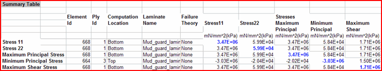

电子表格报告或快速报告所生成的电子表格中包含：
顶级汇总表，该表列出所有结果集和结构数据输入选择之中最差的层片值。仅当选择了多个结果集，或者对于电子表格报告选择了一个结果集和两个输入选择时，才存在顶级汇总表。快速报告可从结构求解器中获得所有结构数据
用于每个结果集的汇总表，以及在使用电子表格报告情况下，用于每个结构数据输入选择的汇总表
|
注释 |
因为层合板求解器和结构求解器并不采用相同的算法，所以层片应力和应变的计算值在两个结构数据输入选择中可以有所不同。 |
对于每个请求的结果，汇总表将显示以下内容：
最差的值出现的位置
最差的值以蓝色显示
相同位置处其他数量的值
